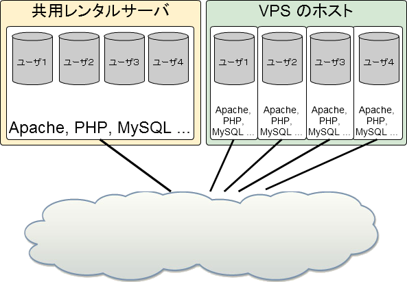

そもそも VPS って何でしょう？
なにそれ、美味しいの？
1台の物理的なサーバの中に構築された論理的な(仮想の)サーバです。
外側から見た場合、普通のサーバと同じように使えます。

専用サーバと同じように root 権限がもらえるため、様々なチューニングが可能です。
専用サーバと違い、一台のサーバを丸々借りるわけではないので、費用も比較的安価に済ませることができます。
また、サーバが欲しい時に素早く調達できるというメリットもあります。
Apache などの Web サーバや PHP 等、すべて自分でインストールする必要があります。
各種セキュリティ設定やソフトウエアのアップデートは、共有レンタルサーバのようにホスティング会社に丸投げって訳にはいきません。
ほっておくとセキュリティホール突かれて乗っ取られる危険もあります。 VPS で運営するのであれば、適切なセキュリティ設定と日々のログ監視が必要になります。